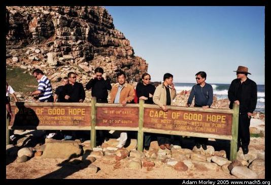

On my way to Kenya, I stopped in Cape Town, since I had a friend who'd be there, and I'd never been to Cape Town. Cape Town turned out to be an awesome city with some great people. It was mostly travelers on their own, so it was easy to meet people to go visit the wine country and other exciting adventures.
I met some fun people in Cape Town. David from LA, Mariano from Barcelona, and Stefi from Germany (among other places) along with Veronica and I rented a car and drove around Cape Town.
A Volkswagon Chico. A solid vehicle with a surprising amount of power for having five people in the car.
We drove down the coast, and visited
Cape Point, the south-western point of Africa. Yes, that's me with my dorky hat.
David, from LA standing above the waves at Cape Point.
What would a trip be without a photo of Japanese tourists?
We also visited the lighthouse near Cape Point. First the old, then the new (quite a walk).
Quite steep, with lovely beaches,
African penguins,
Lovely wine country,
And an amazing winery with some great people.
I highly recommend Cape Town. Not only is it tourist-friendly, but it is home to many educational experiences on apartheid. Nearby, one can tour townships, visit Nelson Mandela's prison and see how far the society has come since the end of apartheid.
Adam can be reached at adam dot morley at gmail dot com